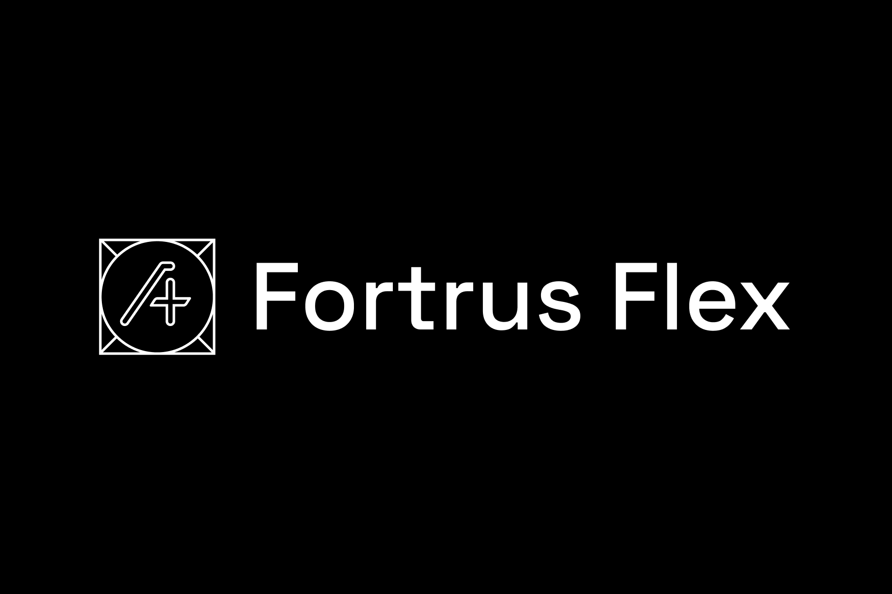
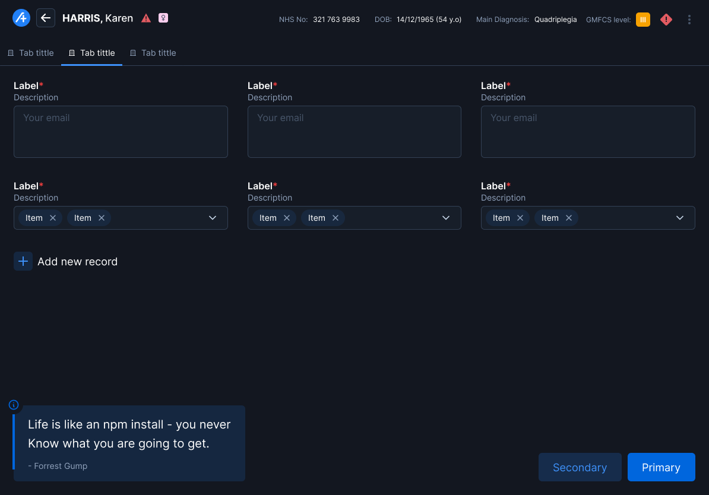
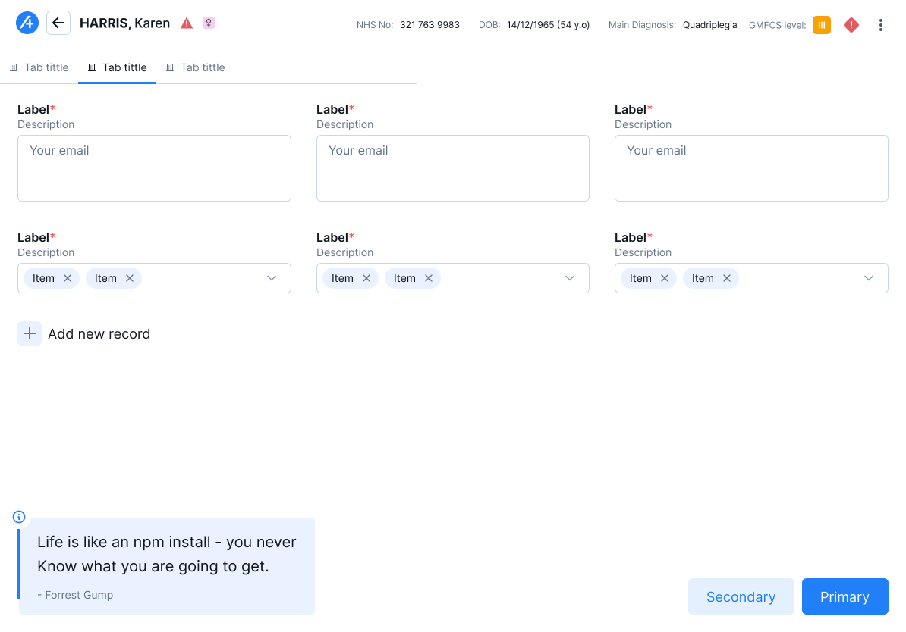
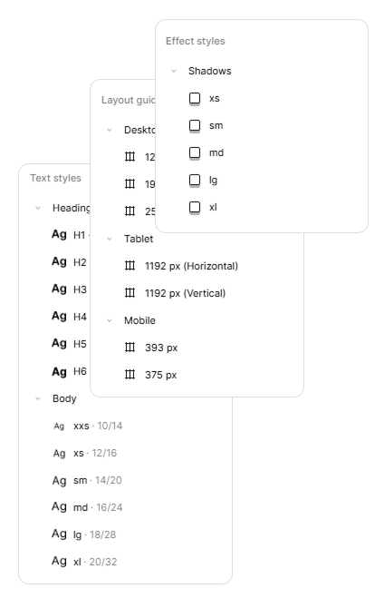
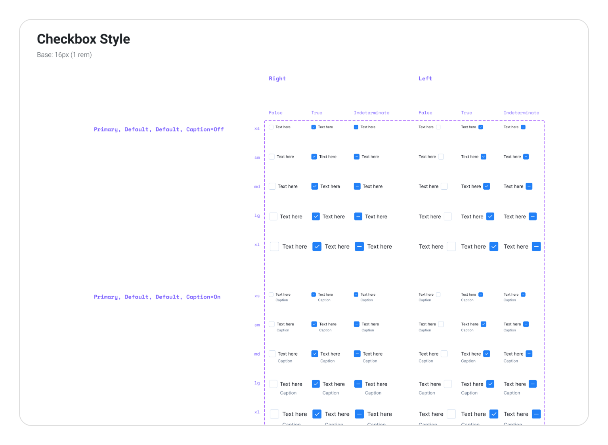

A design system that gives every screen the same answer
Fortrus builds Agyle, a modular electronic patient record running in NHS hospitals. Several squads, several modules, and the same checkbox drawn a slightly different way in each of them — which sounds like an internal tidiness problem until you remember who pays for it. A nurse who learned a control in one module had to learn it again in the next. Fortrus Flex is the system that stopped that: two layers of tokens, a type and layout scale, and components specified in every state they actually ship in — handed to developers as a library rather than as a folder of screenshots.
- ↗
- Speed to a finished screen.
- ◐
- Light and dark from one system.
- ↘
- Developer guesswork.

The same control, redrawn five times, relearned five times.
Agyle is modular, and the modules were built by different squads at different times. That is a sensible way to ship a large product and a terrible way to end up with one: the same control drifted a few pixels, a grey and a label position between modules. Nothing dramatic on a screenshot. Dramatic on a ward, where somebody learned one version and is now looking at another while a patient waits.
Internally the waste was invisible. Designers redrew components that already existed, because finding the old one took longer than making a new one; developers got three reference screens and had to decide which counted. So the brief wasn’t „make a component library". It was: give every screen one place to get its answer from, and make getting it there faster than inventing a new one. A system that is correct and slower than guessing loses to guessing.
Two collections, because one always breaks on the second theme.
In Figma the system sits in two variable collections. The bottom one is paint and nothing else: every colour the brand owns, with no opinion about where it goes. A colour down there doesn’t know it is a border.
The top one is decisions, named after the job rather than the colour — a border, an error message, a disabled label. Nothing up there holds a value of its own; it points at the layer below. That indirection is the whole investment, and it is the first thing dropped when a system is built in a hurry. A single layer is quicker to make and impossible to re-theme, because every decision is welded to a colour.
The split also changes what a change costs. Moving the brand blue is one edit in the primitives and nothing else. Deciding that disabled text should sit lighter is one edit in the tokens and nothing else. Neither requires opening a single screen.

![Panel zmiennych w Figmie, kolekcja Tokens. Po lewej grupy: All 59, Spacing 8, Radius 8, Border 5 z podgrupami Warning, Primary, Error i Success oraz Text 11 z podgrupami Error, Success, Warning, Disabled, Primary i Gray. Po prawej tabela z kolumnami Name, Light i Dark. Promienie radius-sm 6, md 8, lg 16, xl 24 i xxl 32 mają w obu kolumnach tę samą wartość. Niżej sekcja Border: default to Gray/3 w trybie jasnym i Gray/7 w ciemnym, Border/Warning to Amber/6 i Amber/4, Border/Primary to Primary/5 i Primary/4.](assets/fortrusflex/flex-tokens.png)
Dark mode isn't an inversion. It's a different rung on the same ladder.
Invert a light interface and you get a dark background and nothing else that works: quiet borders start shouting, urgent warnings go flat. The usual workaround is a second set of screens, maintained by hand, drifting from the first within a quarter.
Here every token holds two values, and dark is a different step of the same ramp, not a different colour. A default border goes Gray/3 → Gray/7; a warning goes Amber/6 → Amber/4, because against black the background does half the shouting. Radius, spacing and type don’t move at all. So dark mode cost a column in a table, not a second design file — both screens below are one component tree reading one set of token names.


The parts a variable can't hold.
Tokens hold values. They don’t hold a type ramp, a grid or an elevation — those are styles, and they answer a different question. Not „which colour", but „how big, how far apart, and what sits above what".
A type scale exists so nobody picks a size by eye. A layout grid exists so a screen behaves the same way on the narrowest device in the building as on the widest. A named set of elevations exists so „above" has a finite number of answers. Three different problems, one move: replace an open question with a short list.

104 components, each one a family rather than a drawing.
The library ships 104 components, and not one of them is a single fixed object. Every one carries its own variants and instances, so size, state, label position and the rest are properties you switch — not reasons to go and make another component.
That is what makes a system flexible instead of merely tidy. Every state is specified up front, including the ones nobody enjoys drawing — and those are exactly the ones a developer meets at 4pm on a Thursday. Whatever gets invented in that moment becomes the product’s real design system.

Three decisions that shaped the system.
Semantic tokens, not raw colour
WhyPrimitives hold the colour, tokens hold the decision, and a token is named after its job rather than its value — border/warning/default, not blue-500. One flat layer of hex codes would have been quicker to build and impossible to re-theme, because every decision would be welded to a colour and every change a rename rippling through the files.
Dark mode as a column, not a file
WhyEvery token carries a light and a dark value, so switching a component — or a whole screen — is one click, not a redraw. A second set of files would have meant doing the work twice and watching the two drift apart within a quarter.
Ship into the developer environment
WhyA system handed over as a Figma link is a suggestion. Delivered as a library developers pull from, it’s the path of least resistance — and the path of least resistance is the only one that gets taken under deadline.
Every screen now builds from the same kit.
Speed to a finished screen. Assembling from a published library beats redrawing a control that already exists somewhere — which is the only way a system wins against guessing.
Light and dark from one system. Each token carries both values, so there is one component tree instead of two sets of screens to keep in step — and a new theme is an afternoon, not a project.
Developer guesswork. Components arrive with their states specified, so nobody has to decide which of three reference screens counted.
What shipped: 127 primitives, 59 semantic tokens carrying light and dark in the same row, a type scale with every line box on a four-pixel rhythm, layout guides from a 375 px phone up, five named elevations, and components specified across the states they actually ship in. Published as a library, into the environment developers already work in.
The part I care about most is the least visible one. A nurse moving between two Agyle modules now meets the same control twice, and nobody has to remember to make that true — it comes out of the structure. That is the difference between a style guide and a system: a style guide asks people to comply, a system makes compliance the easy option.
What I’d do differently. I built the structure before I built the way in. Two collections and a semantic layer are the right architecture and they are also the part that makes a system feel like homework to a designer under deadline — and a system only pays off if using it is faster than ignoring it. I’d spend the first week watching two designers and two developers try to build one real screen with it, and fix whatever made them hesitate, before adding a single token. Adoption is a usability problem, and I treated it as a documentation problem for longer than I should have.

Tell me what's tangled. I'll tell you where I'd start.
Two sentences about the problem is enough. You get a straight answer back: what I would do, and in what order.
Prefer another channel? I'm on LinkedIn and I answer just as fast there.